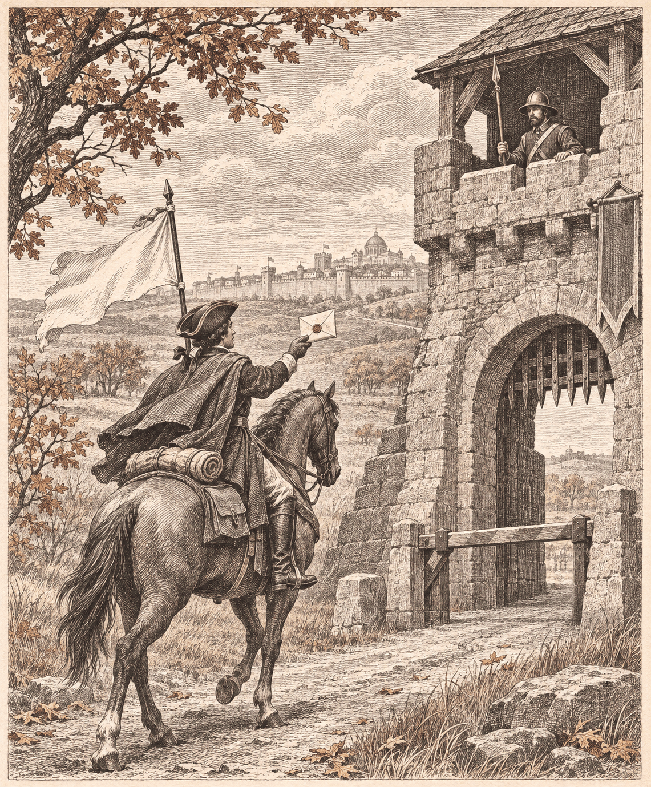

王国軍、五国のうち四国が停戦を乞う
金野は敵の四国すべてに打診
金野・銀嶺・灰岩が今期いっせいに停戦を打診した 前期の紅峰と合わせ、残るのは蒼森だけ 返事はまだ一つも届いていない

【総合部】金野伯爵領が第179期、なのです主義人民共和国、チェス＝シロバキア共和国、青海共和国、オリョルッル王国の四国すべてに、停戦の意思を打診した。同じ王国軍の銀嶺侯国はチェスに、灰岩王国はオリョルッルに、それぞれ打診している。一期に出た停戦の打診は六件にのぼる。前期には紅峰公国がなのですに打診しており、王国軍五国のうち、この二期で白旗を掲げなかったのは蒼森辺境伯領だけになった。
なかでも金野の動きは徹底している。戦っている相手は、チェス、なのです、オリョルッルの三国で、第182期に開戦する青海を含めると四国になる。その四国全部に打診を出した。金野の兵力は三万人。四国の兵力を足すと百七十一万九千九百人で、金野の五十七倍あまりにあたる。食料も第175期の百二万二千六百トンから八十四万九千五百トンへ、四期続けて減っている。戦う理由よりも、戦い続ける体力のほうが先に尽きたとみられる。
ただし、打診を出しただけでは戦は終わらない。遊び方ページによれば、停戦は片方の打診だけでは成り立たず、相手が受け入れて初めて成立する。打診は四期で期限が切れる。今期の公開ログに、成立した停戦は一件もない。六件の打診とも、返事待ちのままである。国際面で詳しく扱う。
紅峰の損害、一万六百人に倍増
停戦を最初に乞うた紅峰公国は、なのですとの戦で今期、公報の損害が一万六百人にのぼった。前期の四千六百人の二・三倍である。人口は六万四千五百人で、第174期の九万三千三百人から五期で三割減った。前期の打診は、成立していない。戦線の詳報は3面。
チェスで火災十一か所、四万六千人
火災は五か国二十二か所で起き、九万二百人が死亡した。直近五期で最大の被害である。チェス＝シロバキア共和国だけで十一か所、四万六千百人。社会面の詳報は6面。